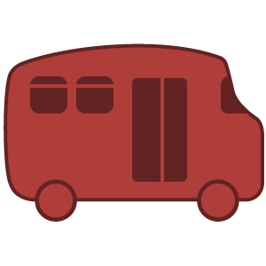
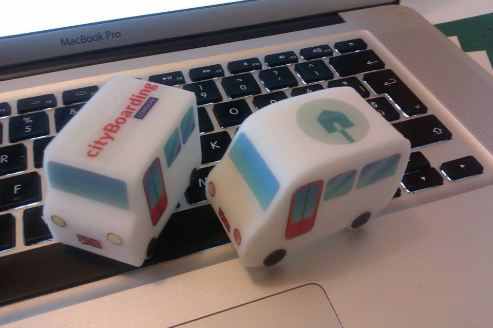
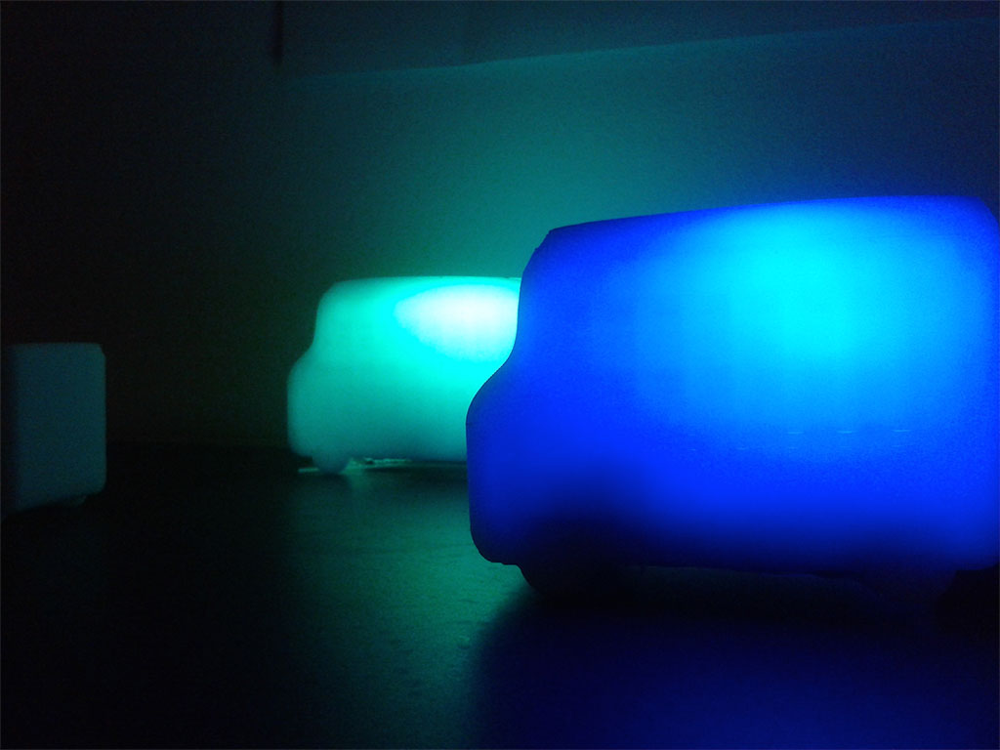
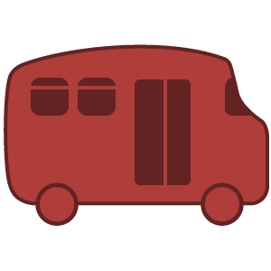
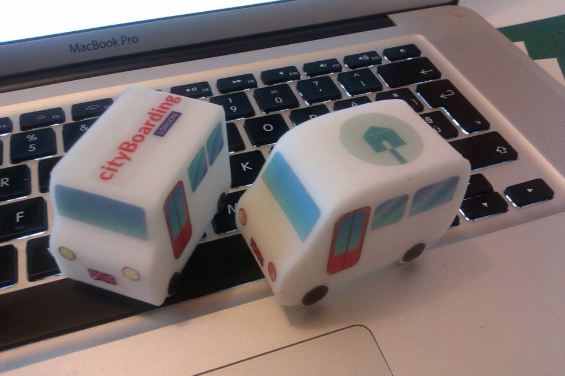
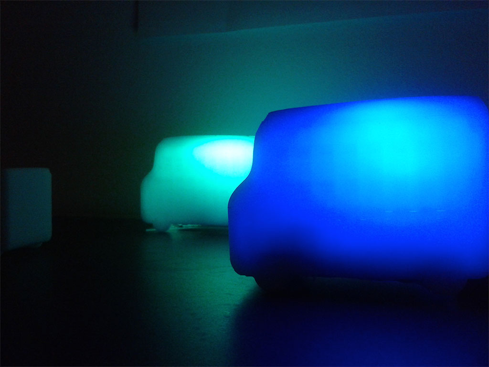

Cityboarding
2013, London. Prototyping and backend design.
Arduino, Java
Cityboarding is an iphone app connected to a 3D printed bus will allow you to know when and where to board.
  
Arduino, Java
Cityboarding is an iphone app connected to a 3D printed bus will allow you to know when and where to board.
  